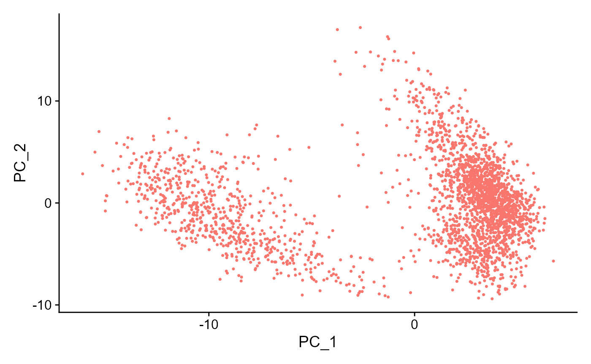
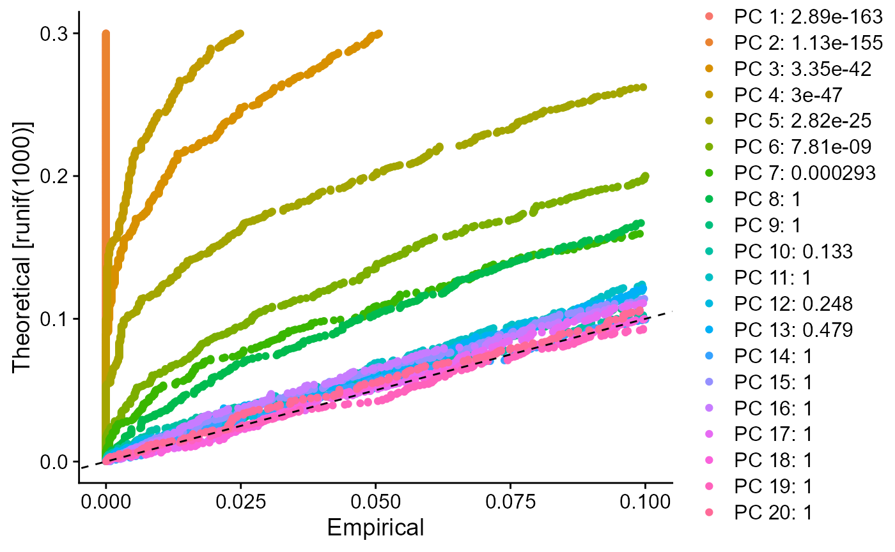
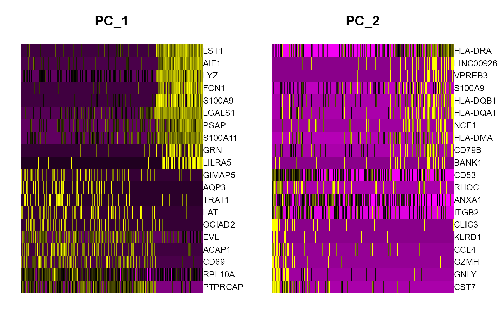
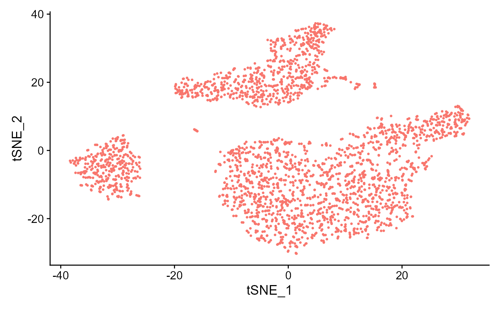
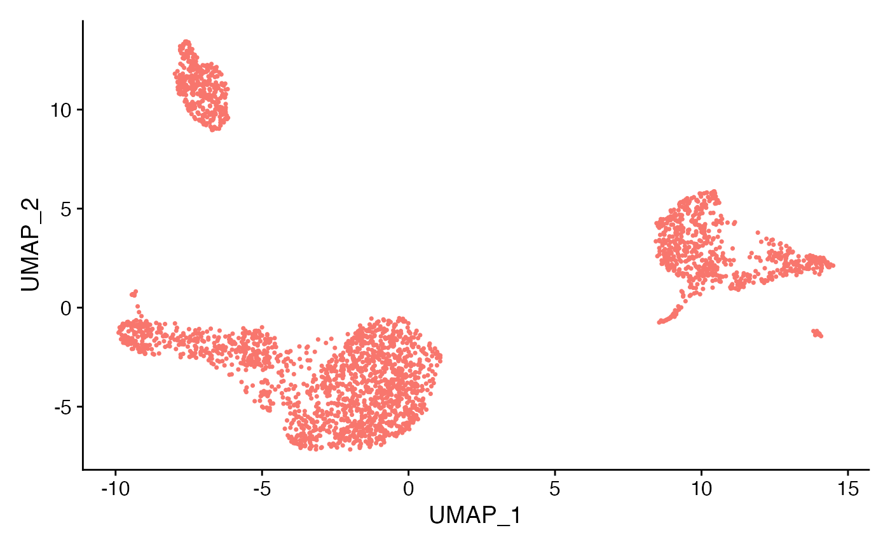
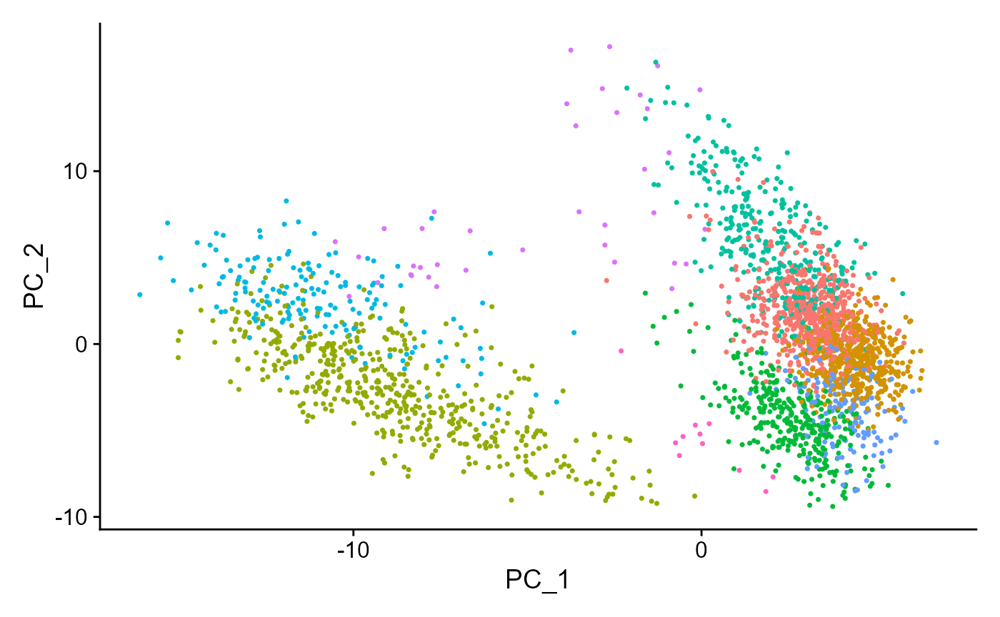
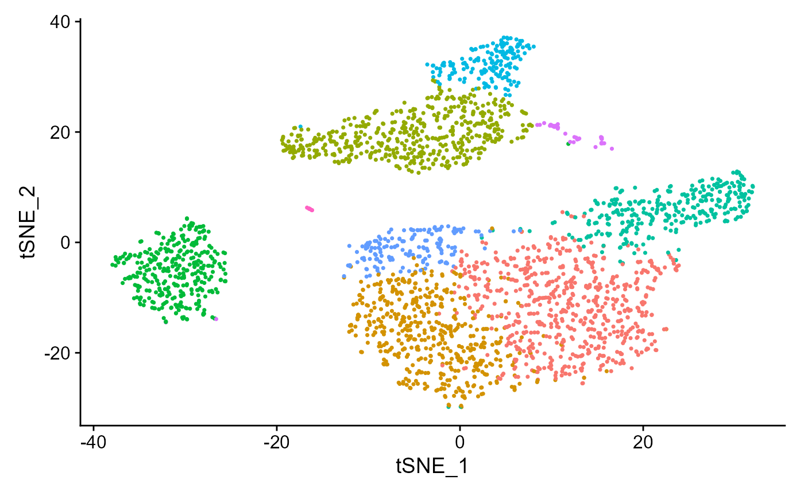
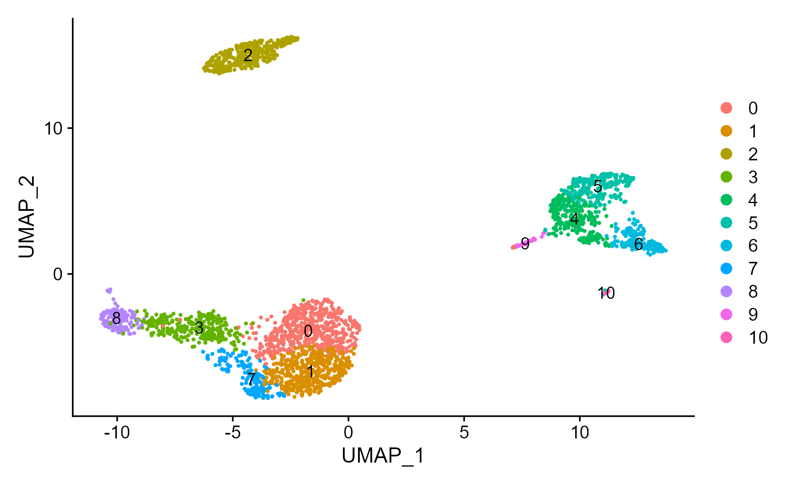
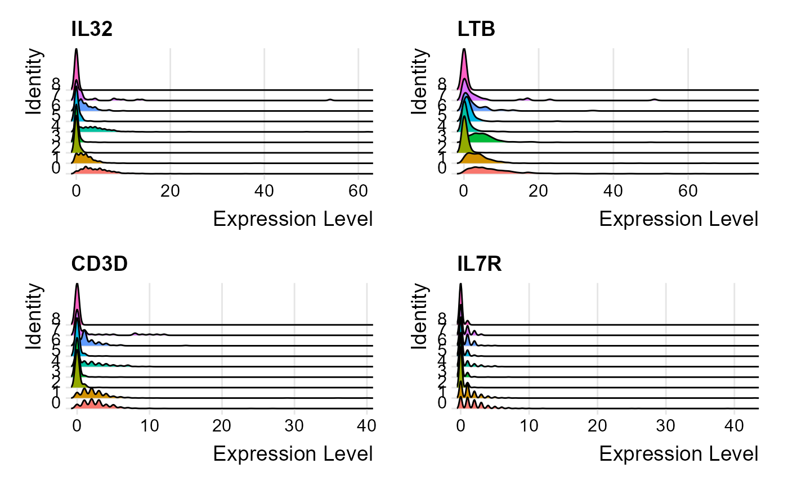

vignettes/articles/cnsl_seurat_curated_workflow.Rmd
cnsl_seurat_curated_workflow.RmdSeurat is an R package (Butler et al., Nature Biotechnology 2018 & Stuart, Butler, et al., Cell 2019) that offers various functions to perform analysis of scRNA-Seq data on the R console.
All methods provided by SCTK for Seurat workflow use a object both as an input and output.
Using a sample dataset:
sce <- importExampleData('pbmc3k')
sce## class: SingleCellExperiment
## dim: 32738 2700
## metadata(0):
## assays(1): counts
## rownames(32738): MIR1302-10 FAM138A ... AC002321.2 AC002321.1
## rowData names(3): ENSEMBL_ID Symbol_TENx Symbol
## colnames(2700): pbmc3k_AAACATACAACCAC-1 pbmc3k_AAACATTGAGCTAC-1 ...
## pbmc3k_TTTGCATGAGAGGC-1 pbmc3k_TTTGCATGCCTCAC-1
## colData names(12): Sample Barcode ... Date_published sample
## reducedDimNames(0):
## altExpNames(0):Once raw data is uploaded and stored in a SingleCellExperiment object, seuratNormalizeData function can be used to normalize the data. The method returns a SingleCellExperiment object with normalized data stored as a new assay in the input object.
Parameters to this function include useAssay (specify the assay that should be normalized), normAssayName (specify the new name of the normalized assay, defaults to “seuratNormData”), normalizationMethod (specify the normalization method to use, defaults to “LogNormalize”) and scaleFactor (defaults to 10000).
sce <- seuratNormalizeData(inSCE = sce, useAssay = "counts", normAssayName = "seuratNormData")## Warning: replacing previous import 'spatstat.utils::RelevantNA' by
## 'spatstat.sparse::RelevantNA' when loading 'spatstat.core'## Warning: replacing previous import 'spatstat.utils::grokIndexVector' by
## 'spatstat.sparse::grokIndexVector' when loading 'spatstat.core'## Warning: replacing previous import 'spatstat.utils::fullIndexSequence' by
## 'spatstat.sparse::fullIndexSequence' when loading 'spatstat.core'## Warning: replacing previous import 'spatstat.utils::positiveIndex' by
## 'spatstat.sparse::positiveIndex' when loading 'spatstat.core'## Warning: replacing previous import 'spatstat.utils::replacementIndex' by
## 'spatstat.sparse::replacementIndex' when loading 'spatstat.core'## Warning: replacing previous import 'spatstat.utils::RelevantEmpty' by
## 'spatstat.sparse::RelevantEmpty' when loading 'spatstat.core'## Warning: replacing previous import 'spatstat.utils::isRelevantZero' by
## 'spatstat.sparse::isRelevantZero' when loading 'spatstat.core'## Warning: replacing previous import 'spatstat.utils::logicalIndex' by
## 'spatstat.sparse::logicalIndex' when loading 'spatstat.core'## Warning: replacing previous import 'spatstat.utils::RelevantZero' by
## 'spatstat.sparse::RelevantZero' when loading 'spatstat.core'## Warning: replacing previous import 'spatstat.utils::strictIndexSequence' by
## 'spatstat.sparse::strictIndexSequence' when loading 'spatstat.core'## Warning: Non-unique features (rownames) present in the input matrix, making
## uniqueNormalized data can be scaled by using the seuratScaleData function that takes inputs a SingleCellExperiment object that has been normalized previously by the seuratNormalizeData function. Scaled assay is stored back in the input object.
Parameters include useAssay (specify the name of normalized assay), scaledAssayName (specify the new name for scaled assay, defaults to “seuratScaledData”), model (specify the method to use, defaults to “linear”), scale (specify if the data should be scaled, defaults to TRUE), center (specify if the data should be centered, defaults to TRUE) and scaleMax (specify the maximum clipping value, defaults to 10).
sce <- seuratScaleData(inSCE = sce, useAssay = "seuratNormData", scaledAssayName = "seuratScaledData")## Warning: Non-unique features (rownames) present in the input matrix, making
## unique## Centering and scaling data matrixHighly variable genes can be identified by first using the seuratFindHVG function that computes that statistics against a selected HVG method in the rowData of input object. The genes can be identified by using the .seuratGetVariableFeatures function. The variable genes can be visualized using the seuratPlotHVG(vals$counts) method. Parameters for seuratFindHVG include useAssay (specify the name of the scaled assay, defaults to “seuratScaledData”) and hvgMethod (specify the method to use for variable genes computation, defaults to “vst”).
sce <- seuratFindHVG(inSCE = sce, useAssay = "seuratScaledData", hvgMethod = "vst")## Warning: Non-unique features (rownames) present in the input matrix, making
## unique## Warning in eval(predvars, data, env): NaNs produced## Warning in hvf.info$variance.expected[not.const] <- 10^fit$fitted: number of
## items to replace is not a multiple of replacement length
print(singleCellTK:::.seuratGetVariableFeatures(sce, 100))## Warning: Non-unique features (rownames) present in the input matrix, making
## unique## [1] "SREBF2" "MIR4519" "ANKS3" "FAM122B" "LSR"
## [6] "FCRL6" "DNAJC17" "HSDL2" "HK3" "SGSM3"
## [11] "INO80" "VCPKMT" "RPRD1A" "TREM1" "ING3"
## [16] "CSTA" "IFRD2" "CD83" "KCMF1" "ZCCHC6"
## [21] "LEMD2" "RP11-244H3.4" "HAUS7" "SLC25A1" "KTI12"
## [26] "GPR137B" "CBLL1" "MDM1" "SLC39A6" "PLXNB2"
## [31] "LIPA" "ANKRD36C" "LONP2" "TOMM40" "SLC25A38"
## [36] "XIAP" "RNF20" "TFG" "YIPF5" "STYXL1"
## [41] "CLUAP1" "PNPLA6" "OSBPL9" "TOB2" "NRG1"
## [46] "PPAPDC1B" "DNAJC9" "CERK" "PDLIM5" "CXorf40A"
## [51] "NFRKB" "CCDC65" "XPNPEP3" "PPIL3" "MRPL17"
## [56] "CLASP2" "UBXN7" "RCN1" "PAK1" "XRCC1"
## [61] "OGFOD2" "GMIP" "IWS1" "MAD2L1" "STARD3NL"
## [66] "NUDT5" "PPM1F" "ACSS1" "CD180" "C14orf159"
## [71] "RASA2" "FAM105A" "ORAI2" "ITSN2" "LATS1"
## [76] "PTEN" "PKN1" "SCAF1" "ZCCHC11" "DNAJB11"
## [81] "WDR54" "TMEM248" "PPP1R35" "NAPRT1" "PRDX3"
## [86] "IL17RA" "C21orf59" "MRPS22" "BCAP29" "FAM160A2"
## [91] "NUP62" "TMEM184B" "RFWD2" "GSK3B" "ZNF354A"
## [96] "ITPK1" "TM2D3" "NFATC3" "MAGED2" "TRAF2"
seuratPlotHVG(sce)## Warning: Non-unique features (rownames) present in the input matrix, making
## unique## Warning in self$trans$transform(x): NaNs produced## Warning: Transformation introduced infinite values in continuous x-axis## Warning: Removed 13847 rows containing missing values (geom_point).PCA or ICA can be computed using the seuratPCA and seuratICA functions respectively. Plots can be visualized using seuratReductionPlot, seuratElbowPlot, seuratComputeJackStraw, seuratJackStrawPlot, seuratComputeHeatmap.
sce <- seuratPCA(inSCE = sce, useAssay = "seuratScaledData", reducedDimName = "seuratPCA", nPCs = 20)## Warning: Non-unique features (rownames) present in the input matrix, making
## unique## Warning in PrepDR(object = object, features = features, verbose = verbose): The
## following 4 features requested have not been scaled (running reduction without
## them): NDUFA7.1, PSMA2.1, CLN3.1, IER3IP1.1## PC_ 1
## Positive: PTPRCAP, RPL10A, CD69, ACAP1, EVL, OCIAD2, LAT, TRAT1, AQP3, GIMAP5
## C12orf57, LEF1, MAL, SELL, SIT1, ARHGAP15, RPL22, CD8B, LBH, HSPA8
## MYC, LDLRAP1, CMPK1, PIM1, MZT2A, GIMAP7, TMEM123, SKAP1, STMN3, SVIP
## Negative: LST1, AIF1, LYZ, FCN1, S100A9, LGALS1, PSAP, S100A11, GRN, LILRA5
## CEBPB, RNF130, ANXA2, RAC1, FGR, IGSF6, HLA-DRA, CTSB, NUP214, FPR1
## MAFB, ALDH2, FGL2, RGS2, TGFBI, TALDO1, STX11, CSF3R, BLVRA, ATP6V0B
## PC_ 2
## Positive: CST7, GNLY, GZMH, CCL4, KLRD1, CLIC3, ITGB2, ANXA1, RHOC, CD53
## HSPA8, GIMAP7, S1PR5, ID2, PLEKHF1, TPST2, LITAF, SH2D1B, XCL1, FCRL6
## ENO1, ZAP70, C1orf21, EVL, XBP1, CLIC1, CD63, PSMB9, KLRG1, GIMAP4
## Negative: HLA-DRA, LINC00926, VPREB3, S100A9, HLA-DQB1, HLA-DQA1, NCF1, HLA-DMA, CD79B, BANK1
## LYZ, PKIG, GNG7, S100A12, FCN1, MARCH1, PPAPDC1B, CD19, CD40, CSF3R
## MEF2C, SNX29P2, GAPT, CD22, NUP214, AIF1, ADAM28, IL8, FOSB, LST1
## PC_ 3
## Positive: GIMAP7, ANXA1, GIMAP4, S100A9, S100A11, RGCC, GIMAP5, LEF1, TRAT1, AQP3
## MAL, LYZ, FCN1, S100A12, LAT, LGALS1, LDLRAP1, AIF1, CSF3R, IL8
## CD8B, C14orf64, RP11-664D1.1, NUP214, APBA2, NUCB2, BST1, PIM1, RGL4, CD44
## Negative: HLA-DQA1, CD79B, HLA-DQB1, LINC00926, HLA-DRA, VPREB3, BANK1, HLA-DMA, PKIG, CD40
## GNG7, CD19, PPAPDC1B, MEF2C, SNX2, MARCH1, CD22, ADAM28, CD180, SNX29P2
## STX7, LAT2, GAPT, PLAC8, TSPAN3, ORAI2, CD53, NCF1, ITM2C, PTPRCAP
## PC_ 4
## Positive: RPL10A, RPL22, AQP3, C6orf48, MAL, LEF1, TMEM123, RGCC, TRAT1, CCDC109B
## CD44, HSPA8, ST13, MYC, CORO1B, RPL41, LDLRAP1, ANXA5, RP11-664D1.1, RCAN3
## TRADD, CRIP2, TSHZ2, ARHGAP15, MZT2A, CD69, TOMM20, CCNL1, EIF4B, ID3
## Negative: CST7, GNLY, CCL4, GZMH, KLRD1, CLIC3, S1PR5, C1orf21, XCL1, TPST2
## FCRL6, PLEKHF1, SH2D1B, CD63, ASCL2, KLRG1, NCR3, PLA2G16, SYNGR1, ID2
## ITGB2, ZBTB16, LPCAT1, YPEL1, AOAH, RGS3, CTSD, GNPTAB, FBXO6, CLIC1
## PC_ 5
## Positive: CSF3R, ID1, NCF1, ALDH2, GRN, S100A12, S100A9, PLBD1, LYZ, NRG1
## BST1, NFKBIA, HMGB2, METTL9, CATSPER1, CSF2RA, IL8, NUP214, FCN1, CD33
## HLA-DMA, ITGAM, TMEM205, SYNGR1, BNIP3L, FPR1, TREM1, ARHGAP26, MEGF9, GM2A
## Negative: HES4, CKB, RHOC, CTSL, SIGLEC10, CXCL16, TCF7L2, UNC119, CUX1, SLC2A6
## CEBPB, ARRB1, LYST, DRAP1, SPN, NAAA, LILRA5, PHF19, ASAH1, CSTB
## SEC14L1, PCGF5, LST1, GPR137B, PLXNB2, PRADC1, PIK3AP1, RAB8A, CD300E, PTP4A2
seuratReductionPlot(inSCE = sce, useReduction = "pca")## Warning: Non-unique features (rownames) present in the input matrix, making
## unique
seuratElbowPlot(inSCE = sce)## Warning: Non-unique features (rownames) present in the input matrix, making
## unique
sce <- seuratComputeJackStraw(inSCE = sce, useAssay = "seuratScaledData", dims = 20)## Warning: Non-unique features (rownames) present in the input matrix, making
## unique## Warning: Invalid name supplied, making object name syntactically valid. New
## object name is Seurat..JackStraw.RNA.pca; see ?make.names for more details on
## syntax validity
seuratJackStrawPlot(inSCE = sce, dims = 20)## Warning: Non-unique features (rownames) present in the input matrix, making
## unique## Warning: Removed 33322 rows containing missing values (geom_point).
seuratComputeHeatmap(inSCE = sce, useAssay = "seuratScaledData", useReduction = "pca", nfeatures = 20, dims = 2)## Warning: Non-unique features (rownames) present in the input matrix, making
## unique
seuratRunTSNE/seuratRunUMAP can be used to compute tSNE/UMAP statistics and store into the input object. Parameters to both functions include inSCE(input SCE object), useReduction (specify the reduction to use i.e. pca or ica), reducedDimName (name of this new reduction) and dims (number of dims to use). seuratReductionPlot can be used to visualize the results.
sce <- seuratRunTSNE(inSCE = sce, useReduction = "pca", reducedDimName = "seuratTSNE", dims = 10)## Warning: Non-unique features (rownames) present in the input matrix, making
## unique
seuratReductionPlot(sce, "tsne")## Warning: Non-unique features (rownames) present in the input matrix, making
## unique
sce <- seuratRunUMAP(inSCE = sce, useReduction = "pca", reducedDimName = "seuratUMAP", dims = 10)## Warning: Non-unique features (rownames) present in the input matrix, making
## unique## Warning: The default method for RunUMAP has changed from calling Python UMAP via reticulate to the R-native UWOT using the cosine metric
## To use Python UMAP via reticulate, set umap.method to 'umap-learn' and metric to 'correlation'
## This message will be shown once per session
seuratReductionPlot(sce, "umap")## Warning: Non-unique features (rownames) present in the input matrix, making
## unique
seuratFindClusters function can be used to compute the clusters, which can later be plotted through the seuratReductionPlot method with cluster labels. The parameters to the function include inSCE (input SCE object), useAssay (name of the scaled assay), useReduction (specify which reduction to use i.e. pca or ica), dims (number of dims to use) and the algorithm (either louvain, multilevel or SLM).
sce <- seuratFindClusters(inSCE = sce, useAssay = "seuratScaledData", useReduction = "pca", dims = 10, algorithm = "louvain")## Warning: Non-unique features (rownames) present in the input matrix, making
## unique## Modularity Optimizer version 1.3.0 by Ludo Waltman and Nees Jan van Eck
##
## Number of nodes: 2700
## Number of edges: 98075
##
## Running Louvain algorithm...
## Maximum modularity in 10 random starts: 0.7929
## Number of communities: 9
## Elapsed time: 0 secondsseuratReductionPlot can then be used to plot all reductions previously computed with cluster labels:
seuratReductionPlot(sce, "pca")## Warning: Non-unique features (rownames) present in the input matrix, making
## unique
seuratReductionPlot(sce, "tsne")## Warning: Non-unique features (rownames) present in the input matrix, making
## unique
seuratReductionPlot(sce, "umap")## Warning: Non-unique features (rownames) present in the input matrix, making
## unique
Marker genes can be identified using the seuratFindMarers function. This function can either use one specified column from colData of the input object as a group variable if all groups from that variable are to be used ( parameter) or users can manually specify the cells included in one group vs cells included in the second group ( and parameter).
sce <- seuratFindMarkers(inSCE = sce, allGroup = "Seurat_louvain_Resolution0.8")## Warning: Non-unique features (rownames) present in the input matrix, making
## unique## gene.id p_val avg_log2FC pct.1 pct.2 p_val_adj cluster
## 1 IL32 7.519719e-155 -35.841637 0.940 0.433 2.461806e-150 1
## 2 LTB 1.838828e-128 16.025684 0.963 0.619 6.019954e-124 1
## 3 CD3D 6.447790e-113 -17.042316 0.901 0.401 2.110878e-108 1
## 4 IL7R 1.823098e-112 -4.101946 0.743 0.295 5.968458e-108 1
## 5 LDHB 2.572198e-96 10.334754 0.930 0.589 8.420861e-92 1
## 6 CD3E 1.041419e-85 14.705010 0.803 0.380 3.409397e-81 1The marker genes identified can be visualized through one of the available plots from ridge plot, violin plot, feature plot, dot plot and heatmap plot. All marker genes visualizations can be plotted through the wrapper function , which must be supplied the SCE object (markers previously computed), name of the scaled assay, type of the plot (available options are , , , and ), features that should be plotted (character vector) and the grouping variable that is available in the colData slot of the input object. An additional parameter decides in how many columns should the visualizations be plotted.
seuratGenePlot(
inSCE = sce,
scaledAssayName = "seuratScaledData",
plotType = "ridge",
features = metadata(sce)[["seuratMarkers"]]$gene.id[1:4],
groupVariable = "Seurat_louvain_Resolution0.8",
ncol = 2
)## Warning: Non-unique features (rownames) present in the input matrix, making
## unique## Picking joint bandwidth of 0.374## Picking joint bandwidth of 0.637## Picking joint bandwidth of 0.282## Picking joint bandwidth of 0.191